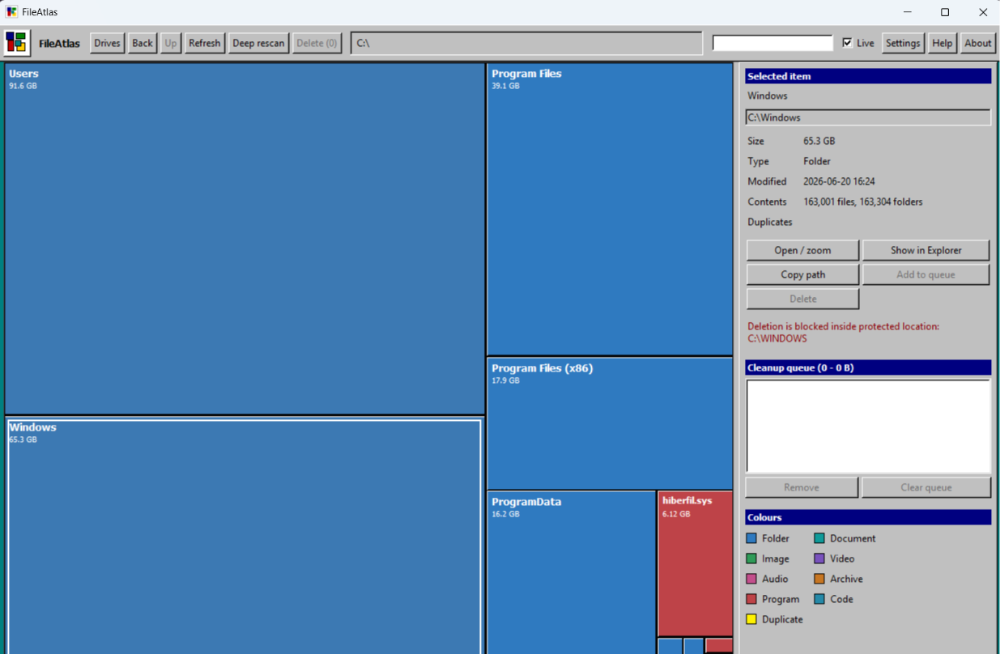
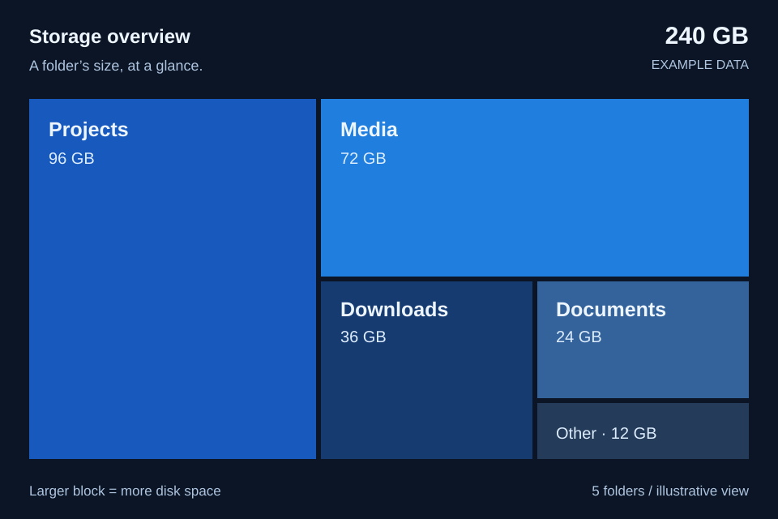

01 FileAtlas Base
See which folders take up space. Zoom into the map, filter by size, and review files before sending them to the Recycle Bin.

Find what’s taking up space. Follow files through edits, moves, and deletions. Keep the history on your own PC.

THE PLATFORM
Available now: storage maps, background history, and analytics. Recovery and FAAV are upcoming additions.
See which folders take up space. Zoom into the map, filter by size, and review files before sending them to the Recycle Bin.

Record what appeared, disappeared, moved or changed — including activity that happened while the desktop app was closed.
Illustrative activity
Planned recovery tools will show what can be restored and where coverage is incomplete. User-facing recovery is not included in the current Core release.
Upcoming behavioral analysis for filesystem changes, including SceneNet. FAAV is experimental and is not a supported antivirus component of the current Core release.
Inspect catalog records and recorded file details. Advanced FileAtlas Dev diagnostics require a local Dev license.
quality = exact source = fastore-catalog state = current generation = 42
REAL PRODUCT SCREENS
FILE HISTORY
Open an item’s history to follow its recorded changes, even after it has moved or is no longer present.
Look for a file by name or path across known files and folders.
Follow edits, moves, renames, and Recycle Bin activity where identity and history are available.
Understand when it changed and whether it is still present. Retained history is not a backup of the file.
UPCOMING / SCENENET 3.0
SceneNet is part of the upcoming FAAV work. Its reference design processes a 16 × 16 grid across eight time slices and 16 channels to examine patterns in filesystem activity.
Activity pattern
Pattern overview
A few isolated cells change while most of the scene stays quiet.
Activity alone does not establish malicious intent.
Upcoming technology, not a feature of the current supported Core release. The visualization explains a concept; it does not demonstrate antivirus effectiveness.
ENGINEERING PRINCIPLES
Base provides the storage view. FAFS and FAStore maintain the local catalog and history. Upcoming recovery and FAAV components build on that foundation.
GET FILEATLAS
Windows 10 / 11 · 64-bit · 4 GB RAM minimum. The installer includes the runtime dependencies.